Hazel 游戏引擎笔记 030：渲染器 API 抽象
本节来源：The Cherno 游戏引擎系列第 30 讲“渲染器 API 抽象”，时长约 47 分 16 秒。
原课程与 Hazel 代码作者：The Cherno。代码参考提交：7677da4。
本文由视频字幕重构、翻译并整理，不是官方教材；术语和代码以原视频及同期 Hazel 仓库为准。
本节目标
上一讲已经用两个手写 Shader 画出了彩色三角形，但所有渲染代码仍然直接塞在 Application 中：
- 直接包含 Glad；
- 直接调用
glGenBuffers、glBufferData； - 直接处理
GL_ARRAY_BUFFER、GL_ELEMENT_ARRAY_BUFFER； - 直接执行
glDrawElements。
本讲第一次认真处理 Hazel 的渲染 API 设计问题：如何让上层代码面对一个统一的 VertexBuffer 或 IndexBuffer，而把 OpenGL、DirectX、Vulkan、Metal 的差异藏在平台实现里。
本讲完成的内容：
- 比较编译期选择 API 与运行期选择 API；
- 建立
RendererAPI枚举和全局当前 API 状态； - 创建通用
VertexBuffer、IndexBuffer接口； - 使用静态
Create()工厂函数返回具体后端实现； - 实现
OpenGLVertexBuffer、OpenGLIndexBuffer； - 把 Application 中的缓冲区创建和绘图数量改为通用接口；
- 保留仍属于 OpenGL 的 Vertex Array 操作，明确下一阶段技术债。
graph TD
A[Application] --> B[VertexBuffer interface]
A --> C[IndexBuffer interface]
A --> D[Shader]
B --> E[OpenGLVertexBuffer]
C --> F[OpenGLIndexBuffer]
D --> G[OpenGL Shader Program]
E --> H[Glad / OpenGL]
F --> H
G --> H
📷 Application 中原本散落着大量 OpenGL 专用代码
回到原视频 (00:00:20)
1. 为什么渲染 API 抽象困难
(参考时间: 00:00:30)
游戏引擎通常要面对两个互相关联、但不能混为一谈的维度。
1.1 平台差异
常见目标平台包括：
- Windows；
- macOS；
- Linux；
- Android；
- iOS；
- PlayStation；
- Xbox；
- Nintendo Switch。
每个平台的窗口系统、图形能力、编译器和原生 API 都不相同。
1.2 图形 API 差异
同一平台可能支持多个图形 API，例如：
- OpenGL；
- DirectX；
- Vulkan；
- Metal。
平台抽象解决“窗口和系统服务怎样创建”；渲染 API 抽象解决“顶点缓冲、纹理、Shader、Draw Call 怎样表达”。
本讲只处理第二类问题，也就是渲染后端。
graph TD
A[游戏 / 编辑器] --> B[平台层]
A --> C[渲染抽象层]
B --> D[Windows]
B --> E[macOS]
B --> F[Linux]
C --> G[OpenGL backend]
C --> H[DirectX backend]
C --> I[Vulkan backend]
C --> J[Metal backend]
📷 平台抽象与渲染 API 抽象是两个不同维度
回到原视频 (00:01:10)
2. 编译期选择还是运行期选择
(参考时间: 00:03:40)
讲师把最重要的设计决策概括为一句话：
图形 API 是在编译时选择，还是在运行时选择？
2.1 编译期选择
编译期方案可以通过预处理宏或构建配置决定后端：
#ifdef HZ_RENDERER_OPENGL
// OpenGL 实现
#elif defined(HZ_RENDERER_DIRECTX)
// DirectX 实现
#endif
也可以把不同后端放进不同项目、不同 DLL 或不同可执行文件。
优点：
- 最终二进制只包含当前后端；
- 不需要在运行时查询“现在用的是哪个 API”；
- 热路径没有额外分派成本；
- 发布包更小。
缺点：
- 更换 API 通常需要重新构建；
- 开发时需要维护多个构建配置；
- 想在 OpenGL 与 DirectX 之间快速比较画面时，流程比较笨重。
2.2 运行期选择
运行期方案让所有支持的后端都参与构建，然后通过统一的抽象对象选择实现。
优点：
- 可以在运行时切换后端；
- 更容易比较不同 API 的渲染结果；
- 编辑器或测试工具可以按配置选择后端；
- 上层游戏代码不需要包含 API 专用头文件。
缺点：
- 需要同时编译多个后端；
- 二进制和工程复杂度增加；
- 平台不支持的后端仍要用文件级或宏级隔离；
- 抽象层自身需要额外设计。
flowchart TD
A{何时决定渲染 API} --> B[编译期]
A --> C[运行期]
B --> D[更小的二进制 / 热路径更直接]
B --> E[切换 API 需要重新构建]
C --> F[可运行时切换]
C --> G[所有后端都需参与构建]
📷 讲师把编译期与运行期选择视为渲染抽象的核心分岔
回到原视频 (00:03:50)
3. Hazel 为什么选择运行期抽象
(参考时间: 00:07:45)
讲师明确说明：渲染 API 设计没有唯一正确答案，它取决于引擎目标、团队习惯和性能要求。
Hazel 选择运行期抽象，主要原因是开发体验：
- 不需要为了比较 OpenGL 与 DirectX 而切换整套构建配置；
- 游戏或编辑器代码只接触通用类型；
- 可以在更高层决定后端；
- 后续加入 Renderer、RenderCommand 时，接口能继续演进。
讲师也强调自己的性能取向与 EA 游戏工程背景：运行期分派必须被认真评估。Hazel 的判断是，在资源创建和部分渲染命令中，一层虚函数或分支的成本远小于实际绘制和 GPU 提交，尤其当 API 查询不会在最小内层循环里反复发生时，可以接受。
这不是“运行期分派永远免费”，而是“在当前引擎规模和抽象收益下值得”。
graph LR
A[上层游戏代码] --> B[通用渲染接口]
B --> C{当前 RendererAPI}
C -- OpenGL --> D[OpenGL implementation]
C -- DirectX --> E[DirectX implementation]
C -- Vulkan --> F[Vulkan implementation]
📷 设计取舍取决于引擎对性能、构建复杂度和开发效率的要求
回到原视频 (00:08:00)
4. 目标 API 形态
(参考时间: 00:16:06)
当前 Application 的运行结果已经正确：位置数据经过顶点 Shader，再由片元 Shader 输出颜色。
但实现方式只是“尽快把图形放到屏幕上”的教学版本。理想情况下，上层代码不需要：
#include <glad/glad.h>；- 直接调用
glGenBuffers； - 直接调用
glBufferData； - 直接知道 OpenGL 的 Buffer Target。
讲师希望最终写成类似：
auto vertexBuffer =
VertexBuffer::Create(vertices, sizeof(vertices));
vertexBuffer->Bind();
资源创建参数将来可以继续扩展，例如：
- 顶点数据；
- 字节数；
- 静态、动态或流式更新策略；
- 是否需要 CPU 侧副本；
- 数据布局。
本讲先做最小版本，不一次设计完整资源系统。
flowchart LR
A[顶点数组] --> B[VertexBuffer::Create]
B --> C{RendererAPI}
C -- OpenGL --> D[OpenGLVertexBuffer]
C -- 其他后端 --> E[对应平台 Buffer]
D --> F[Bind]
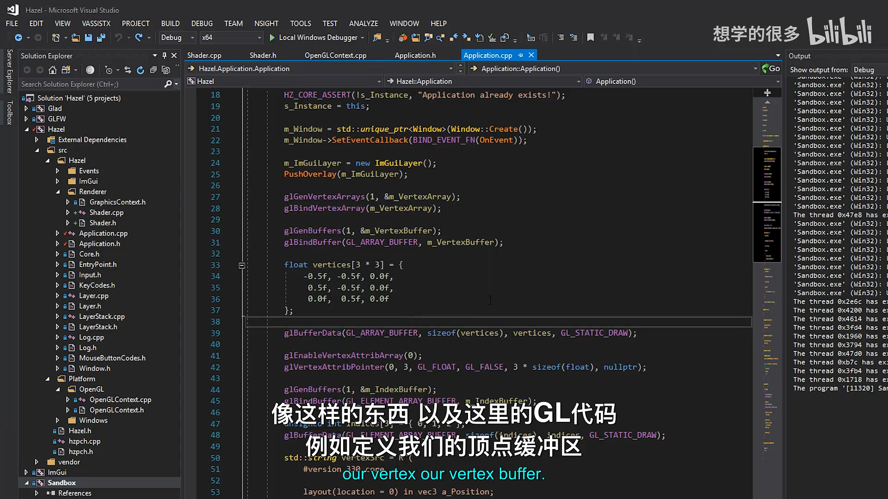
📷 目标是把 GL 调用收缩到通用资源接口后面
回到原视频 (00:16:30)
5. Create() 返回什么
(参考时间: 00:17:33)
Create() 是静态工厂函数，而不是普通构造函数。
原因很直接：抽象基类 VertexBuffer 不能凭空知道应该构造哪个派生类。静态函数可以检查当前渲染 API，再返回对应实现。
本讲选择返回裸指针：
static VertexBuffer* Create(
float* vertices,
uint32_t size);
调用方负责所有权。当前 Application 使用 std::unique_ptr 接管：
std::unique_ptr<VertexBuffer> m_VertexBuffer;
m_VertexBuffer.reset(
VertexBuffer::Create(vertices, sizeof(vertices)));
讲师说明，如果引擎将来有引用计数或专门的资源句柄系统，Create() 也可以返回引用计数指针。当前还没有这类基础设施，所以先使用裸指针加明确的上层所有权。
sequenceDiagram
participant App as Application
participant VB as VertexBuffer
participant GL as OpenGLVertexBuffer
App->>VB: Create(vertices, size)
VB->>VB: Renderer::GetAPI()
VB->>GL: new OpenGLVertexBuffer(...)
GL-->>VB: derived pointer
VB-->>App: VertexBuffer*
App->>App: unique_ptr.reset(pointer)
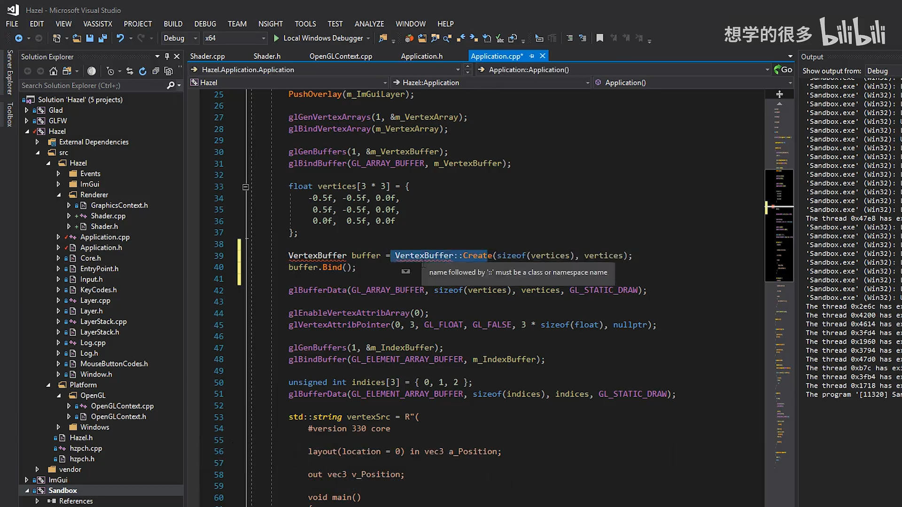
📷 静态 Create 是后端选择的入口
回到原视频 (00:17:45)
6. 文件组织与职责边界
(参考时间: 00:18:10)
通用渲染资源文件放在：
Hazel/src/Hazel/Renderer/
Buffer.h
Buffer.cpp
OpenGL 专用实现放在：
Hazel/src/Platform/OpenGL/
OpenGLBuffer.h
OpenGLBuffer.cpp
Buffer.h 中包含 VertexBuffer 与 IndexBuffer 两个抽象类。讲师倾向于把同一种资源的多个变体放在一个文件里，例如未来 Texture.h 可以同时容纳 2D、3D、Cube Map 等纹理接口。
这是讲师的文件组织偏好，不是渲染系统的硬性规则：
- 一个资源类型一个文件；
- 一种 API 一个平台实现文件；
- 避免为了几十行小类制造大量文件。
graph TD
A[Buffer.h] --> B[VertexBuffer]
A --> C[IndexBuffer]
D[Buffer.cpp] --> E[Create dispatch]
F[OpenGLBuffer.h] --> G[OpenGLVertexBuffer]
F --> H[OpenGLIndexBuffer]
I[OpenGLBuffer.cpp] --> J[OpenGL buffer calls]
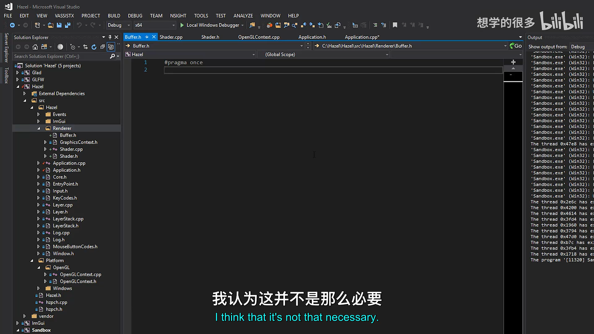
📷 Buffer 接口与 OpenGL 实现被放进不同的职责目录
回到原视频 (00:18:30)
7. 通用缓冲区接口
(参考时间: 00:19:30)
Buffer.h 中的通用接口没有数据成员，只描述行为：
#pragma once
namespace Hazel {
class VertexBuffer
{
public:
virtual ~VertexBuffer() {}
virtual void Bind() const = 0;
virtual void Unbind() const = 0;
static VertexBuffer* Create(
float* vertices,
uint32_t size);
};
class IndexBuffer
{
public:
virtual ~IndexBuffer() {}
virtual void Bind() const = 0;
virtual void Unbind() const = 0;
virtual uint32_t GetCount() const = 0;
static IndexBuffer* Create(
uint32_t* indices,
uint32_t count);
};
}
几个关键设计点：
- 析构函数必须是
virtual，否则通过基类指针删除派生对象会破坏资源释放； Bind()与Unbind()是纯虚函数，让每个后端自己定义状态切换；IndexBuffer额外提供GetCount()，因为 Draw Call 需要知道索引数量；- 抽象类本身不持有 OpenGL ID，平台状态留在具体实现中。
classDiagram
class VertexBuffer {
+Bind() const
+Unbind() const
+Create(vertices, size)$
+~VertexBuffer()
}
class IndexBuffer {
+Bind() const
+Unbind() const
+GetCount() const
+Create(indices, count)$
+~IndexBuffer()
}
class OpenGLVertexBuffer {
-uint32_t m_RendererID
+Bind() const
+Unbind() const
}
class OpenGLIndexBuffer {
-uint32_t m_RendererID
-uint32_t m_Count
+Bind() const
+Unbind() const
+GetCount() const
}
VertexBuffer <|-- OpenGLVertexBuffer
IndexBuffer <|-- OpenGLIndexBuffer
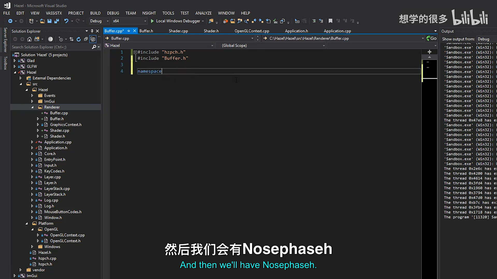
📷 接口只保留绑定、解绑和查询数量等通用能力
回到原视频 (00:19:45)
8. 当前渲染 API 状态
(参考时间: 00:32:00)
为了让工厂函数知道创建哪个后端，新增 Renderer.h：
#pragma once
namespace Hazel {
enum class RendererAPI
{
None = 0,
OpenGL = 1
};
class Renderer
{
public:
inline static RendererAPI GetAPI()
{
return s_RendererAPI;
}
private:
static RendererAPI s_RendererAPI;
};
}
当前值在 Renderer.cpp 中固定为 OpenGL：
#include "hzpch.h"
#include "Renderer.h"
namespace Hazel {
RendererAPI Renderer::s_RendererAPI =
RendererAPI::OpenGL;
}
None 的意义是：某些测试或工具可能只需要 Headless 环境，不必初始化真实图形后端。
讲师还讨论了 SetAPI()：如果要在运行时选择后端，应当尽早设置，最好在创建窗口、Context 和 Application 之前完成，使后续资源都按同一 API 创建。
stateDiagram-v2
[*] --> SelectAPI
SelectAPI --> CreateWindow
CreateWindow --> CreateContext
CreateContext --> CreateResources
CreateResources --> Render
SelectAPI: Renderer::SetAPI()
CreateResources: Buffer / Shader / Texture
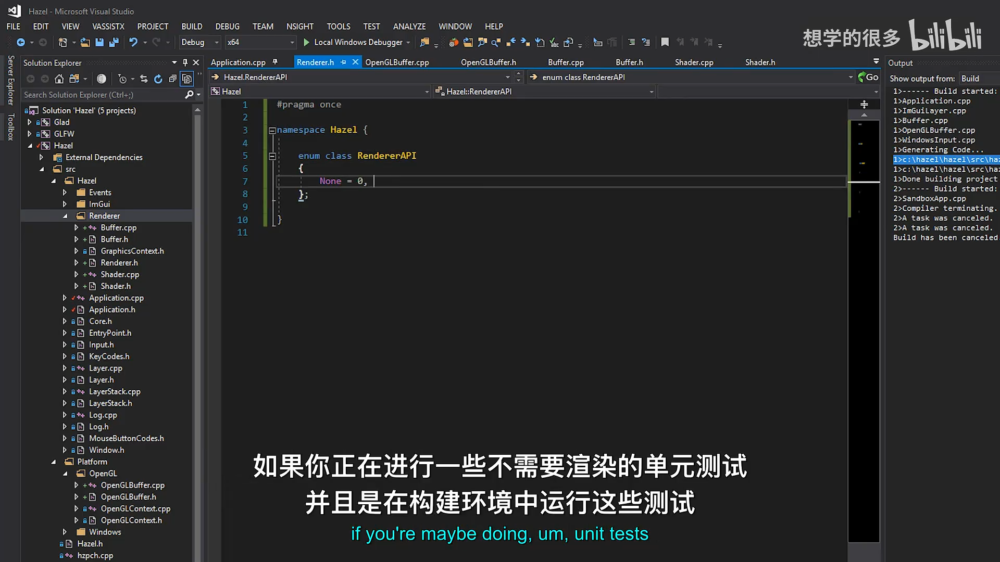
📷 RendererAPI 枚举把当前后端保存在全局状态中
回到原视频 (00:32:20)
9. 工厂分派实现
(参考时间: 00:34:30)
Buffer.cpp 负责把静态 Create() 转发到具体实现：
#include "hzpch.h"
#include "Buffer.h"
#include "Renderer.h"
#include "Platform/OpenGL/OpenGLBuffer.h"
namespace Hazel {
VertexBuffer* VertexBuffer::Create(
float* vertices,
uint32_t size)
{
switch (Renderer::GetAPI())
{
case RendererAPI::None:
HZ_CORE_ASSERT(
false,
"RendererAPI::None is currently not supported!");
return nullptr;
case RendererAPI::OpenGL:
return new OpenGLVertexBuffer(
vertices,
size);
}
HZ_CORE_ASSERT(false, "Unknown RendererAPI!");
return nullptr;
}
}
IndexBuffer::Create() 的结构完全相同，只是返回 OpenGLIndexBuffer。
这里体现了运行期抽象的核心模式：
- 上层调用与具体 API 无关的静态
Create()； Create()查询Renderer::GetAPI()；switch进入对应后端；- 基类指针返回给上层；
- 实际实现只在平台目录中出现。
flowchart TD
A[VertexBuffer::Create] --> B{Renderer::GetAPI}
B -- None --> C[断言：暂不支持]
B -- OpenGL --> D[new OpenGLVertexBuffer]
D --> E[返回 VertexBuffer*]
B -- 未知值 --> F[断言：Unknown RendererAPI]
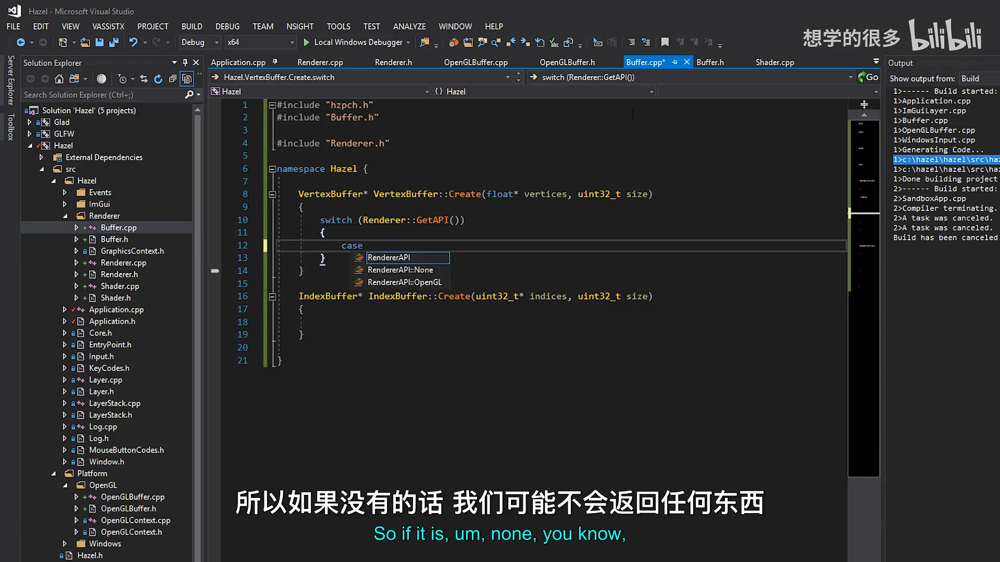
📷 Buffer 工厂通过 switch 选择当前图形后端
回到原视频 (00:34:50)
10. 平台隔离仍然需要条件编译
(参考时间: 00:36:20)
运行期抽象并不代表完全消除预处理宏。
DirectX 只在 Windows 与 Xbox 等 Microsoft 平台可用；Metal 通常只在 Apple 平台可用。因此 Buffer.cpp 在真正加入这些后端时，仍可能需要：
#ifdef HZ_PLATFORM_WINDOWS
case RendererAPI::DirectX:
return new DirectXVertexBuffer(...);
#endif
关键区别是：
- 宏只隔离“平台无法编译的后端”；
- 上层游戏代码仍然只依赖
VertexBuffer； - 渲染 API 选择本身仍可在支持范围内由运行期状态决定。
也就是说，运行期抽象与编译期平台隔离会共存，而不是互相排斥。
graph TD
A[Buffer.cpp] --> B{目标平台是否支持}
B -- 支持 DirectX --> C[编译 DirectX case]
B -- 不支持 --> D[排除 DirectX code]
A --> E[始终编译支持的后端]
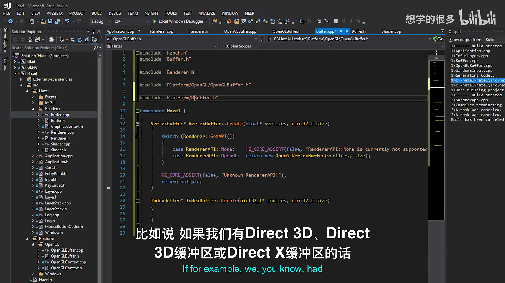
📷 平台专属后端仍要用宏或独立文件控制是否参与编译
回到原视频 (00:36:40)
11. OpenGL 顶点缓冲实现
(参考时间: 00:24:15)
OpenGLBuffer.h 中的顶点缓冲继承通用接口：
class OpenGLVertexBuffer :
public VertexBuffer
{
public:
OpenGLVertexBuffer(
float* vertices,
uint32_t size);
virtual ~OpenGLVertexBuffer();
virtual void Bind() const;
virtual void Unbind() const;
private:
uint32_t m_RendererID;
};
实现中使用 glCreateBuffers：
OpenGLVertexBuffer::OpenGLVertexBuffer(
float* vertices,
uint32_t size)
{
glCreateBuffers(1, &m_RendererID);
glBindBuffer(GL_ARRAY_BUFFER, m_RendererID);
glBufferData(
GL_ARRAY_BUFFER,
size,
vertices,
GL_STATIC_DRAW);
}
绘制时：
void OpenGLVertexBuffer::Bind() const
{
glBindBuffer(GL_ARRAY_BUFFER, m_RendererID);
}
void OpenGLVertexBuffer::Unbind() const
{
glBindBuffer(GL_ARRAY_BUFFER, 0);
}
析构：
OpenGLVertexBuffer::~OpenGLVertexBuffer()
{
glDeleteBuffers(1, &m_RendererID);
}
glCreateBuffers 只负责创建 Buffer 对象；随后仍然需要 glBindBuffer 选择目标，才能让 glBufferData 明确作用于当前 Buffer。它减少了 glGenBuffers 一类旧接口的步骤，但不能把“创建”和“绑定”混为一谈。
sequenceDiagram
participant App as Application
participant VB as OpenGLVertexBuffer
participant GL as OpenGL
App->>VB: new OpenGLVertexBuffer(data, size)
VB->>GL: glCreateBuffers
VB->>GL: glBindBuffer(GL_ARRAY_BUFFER)
VB->>GL: glBufferData
App->>VB: ~OpenGLVertexBuffer
VB->>GL: glDeleteBuffers
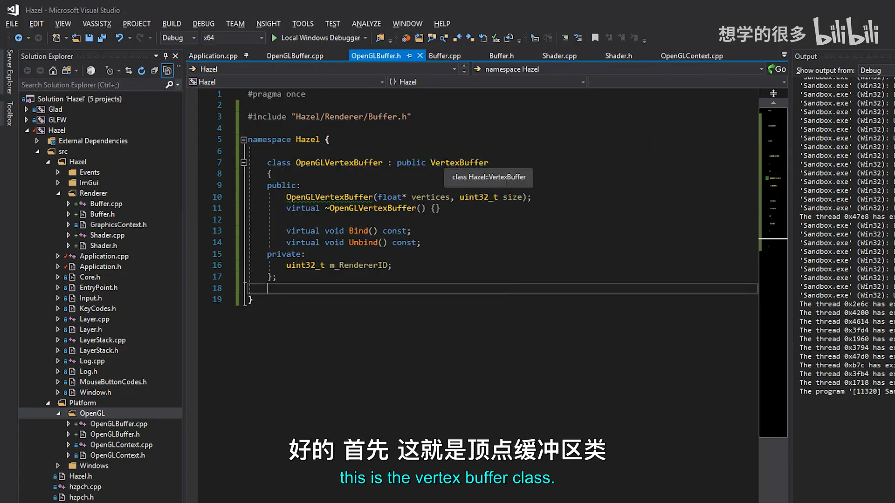
📷 OpenGLVertexBuffer 把 ID、上传和生命周期封装在平台类中
回到原视频 (00:27:10)
12. OpenGL 索引缓冲实现
(参考时间: 00:38:00)
索引缓冲的目标对象是 GL_ELEMENT_ARRAY_BUFFER，并且额外保存元素数量：
class OpenGLIndexBuffer :
public IndexBuffer
{
public:
OpenGLIndexBuffer(
uint32_t* indices,
uint32_t count);
virtual ~OpenGLIndexBuffer();
virtual void Bind() const;
virtual void Unbind() const;
virtual uint32_t GetCount() const
{
return m_Count;
}
private:
uint32_t m_RendererID;
uint32_t m_Count;
};
构造函数：
OpenGLIndexBuffer::OpenGLIndexBuffer(
uint32_t* indices,
uint32_t count)
: m_Count(count)
{
glCreateBuffers(1, &m_RendererID);
glBindBuffer(
GL_ELEMENT_ARRAY_BUFFER,
m_RendererID);
glBufferData(
GL_ELEMENT_ARRAY_BUFFER,
count * sizeof(uint32_t),
indices,
GL_STATIC_DRAW);
}
这里明确区分了两个概念：
count是索引元素个数；count * sizeof(uint32_t)才是字节数。
Draw Call 需要的是元素数量，而 glBufferData 需要的是字节数，因此接口保存 count，底层在上传时转换。
flowchart LR
A[uint32_t count] --> B[保存 m_Count]
A --> C[count * sizeof uint32_t]
C --> D[glBufferData bytes]
B --> E[GetCount for draw]
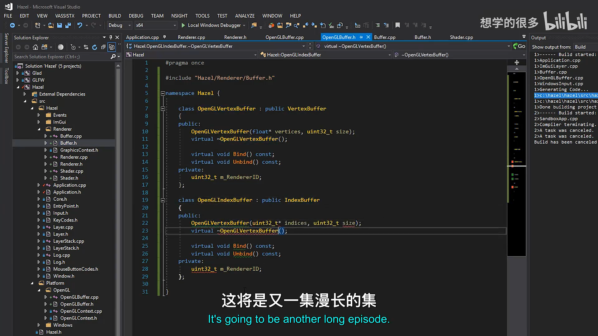
📷 IndexBuffer 保存元素数量，并在上传时换算成字节数
回到原视频 (00:38:10)
13. size 与 count 的语义
(参考时间: 00:40:45)
这是本讲一个容易被忽略、但对 API 设计很重要的细节。
如果参数名是 size：
- 它表示字节数；
- 调用者通常传
sizeof(array)； - 底层可以直接用于
glBufferData。
如果参数名是 count：
- 它表示元素个数；
- 底层需要乘以元素大小；
- 但绘图命令可以直接使用它。
OpenGL 的 glDrawElements 需要索引数量，因此索引缓冲必须能返回 GetCount()。如果接口只保存字节数，绘制时还得反算。
视频最后为了提高可读性，把 Application 中的 sizeof(indices) / sizeof(uint32_t) 直接写成 3，但注释和代码仍然要清楚这是三个索引，而不是三个字节。
graph TD
A[Buffer 参数] --> B{名称语义}
B -- size --> C[字节数]
B -- count --> D[元素数]
C --> E[直接上传或 / sizeof 后得到 count]
D --> F[乘 sizeof 后上传；直接用于 Draw]
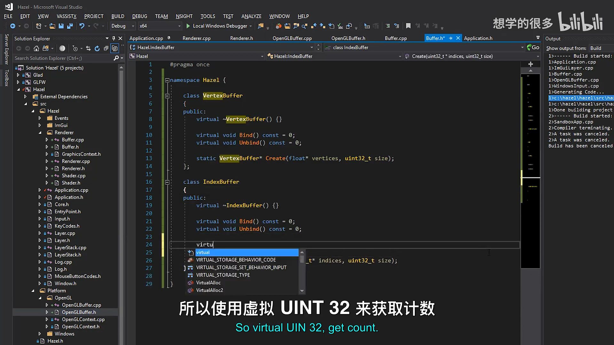
📷 size 表示字节，count 表示元素，命名必须与语义一致
回到原视频 (00:41:10)
14. Application 改用通用缓冲接口
(参考时间: 00:29:55)
Application.h 引入 Buffer.h：
#include "Hazel/Renderer/Buffer.h"
原有的裸 OpenGL ID：
unsigned int m_VertexArray;
unsigned int m_VertexBuffer;
unsigned int m_IndexBuffer;
变成：
unsigned int m_VertexArray;
std::unique_ptr<Shader> m_Shader;
std::unique_ptr<VertexBuffer> m_VertexBuffer;
std::unique_ptr<IndexBuffer> m_IndexBuffer;
构造三角形时：
float vertices[3 * 3] = {
-0.5f, -0.5f, 0.0f,
0.5f, -0.5f, 0.0f,
0.0f, 0.5f, 0.0f
};
m_VertexBuffer.reset(
VertexBuffer::Create(
vertices,
sizeof(vertices)));
uint32_t indices[3] = { 0, 1, 2 };
m_IndexBuffer.reset(
IndexBuffer::Create(
indices,
sizeof(indices) / sizeof(uint32_t)));
绘制时不再硬编码 3：
glDrawElements(
GL_TRIANGLES,
m_IndexBuffer->GetCount(),
GL_UNSIGNED_INT,
nullptr);
这样，索引数量由资源自己提供，Application 不必和缓冲区内部数据长度脱节。
graph TD
A[vertices + indices] --> B[VertexBuffer::Create]
A --> C[IndexBuffer::Create]
B --> D[unique_ptr VertexBuffer]
C --> E[unique_ptr IndexBuffer]
D --> F[Shader / Draw Call]
E --> F
E --> G[GetCount]
G --> H[glDrawElements]
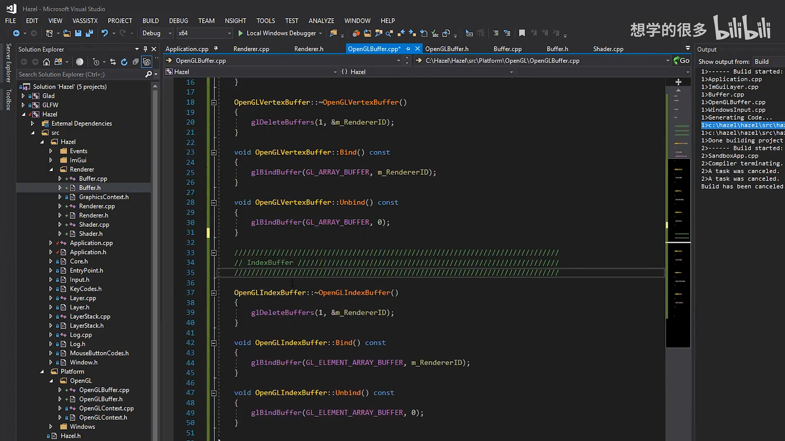
📷 Application 通过通用 Create 创建缓冲区，并从 IndexBuffer 读取索引数
回到原视频 (00:40:00)
15. 第一轮运行暴露的问题
(参考时间: 00:42:30)
第一次运行没有直接得到预期的三角形。讲师借这个调试过程强调：资源对象被创建，并不等于底层状态已经正确绑定。
调整时重点检查了：
- 顶点缓冲是否绑定到
GL_ARRAY_BUFFER； - 索引缓冲是否绑定到
GL_ELEMENT_ARRAY_BUFFER； - Draw Call 是否使用
IndexBuffer::GetCount()； - 顶点属性指针是否仍然面对当前绑定状态。
最终的 OpenGL 实现把绑定动作放入构造函数与 Bind()，并在 Application 中通过通用接口创建资源。重新运行后，原来的彩色三角形正常出现。
这说明抽象层不是“把代码挪个位置”就结束。底层的上下文状态、VAO 绑定关系和 Buffer Target 仍然必须准确。
flowchart TD
A[Create abstraction] --> B[Bind GL_ARRAY_BUFFER]
A --> C[Bind GL_ELEMENT_ARRAY_BUFFER]
B --> D[glBufferData vertex data]
C --> E[glBufferData index data]
D --> F[Vertex attribute setup]
E --> F
F --> G[Shader Bind]
G --> H[DrawIndexed / glDrawElements]
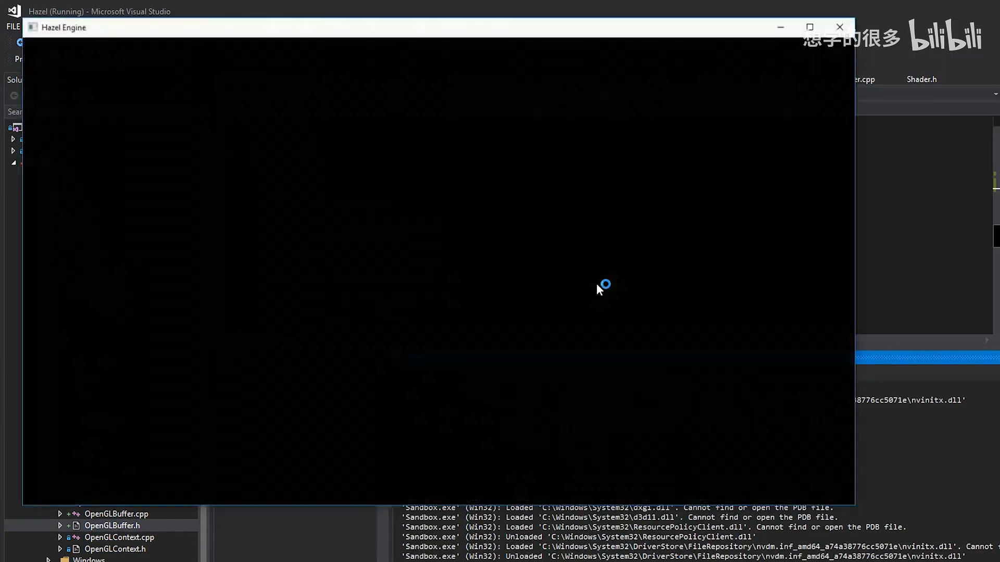
📷 缓冲区需要正确绑定后才能给 VAO、属性配置和 Draw Call 使用
回到原视频 (00:42:50)
16. 抽象完成后的边界
(参考时间: 00:44:05)
重构后的 Application 已经不再直接创建 Vertex Buffer 与 Index Buffer：
m_VertexBuffer.reset(
VertexBuffer::Create(vertices, sizeof(vertices)));
m_IndexBuffer.reset(
IndexBuffer::Create(indices, 3));
但仍有 OpenGL 遗留：
glGenVertexArrays(1, &m_VertexArray);
glBindVertexArray(m_VertexArray);
glEnableVertexAttribArray(0);
glVertexAttribPointer(...);
glDrawElements(...);
Buffer.h 与 Buffer.cpp 不包含 Glad，也不需要了解 GL_ARRAY_BUFFER、GL_ELEMENT_ARRAY_BUFFER。这些细节只留在：
Platform/OpenGL/OpenGLBuffer.h
Platform/OpenGL/OpenGLBuffer.cpp
这就是本讲的阶段性成果：缓冲区资源已经通过通用接口创建，平台实现被隔离；但 Vertex Array 与直接 Draw Call 还没有抽象。
graph TD
A[Application] --> B[Buffer interface]
A --> C[Shader interface]
A --> D[Raw OpenGL VAO]
A --> E[Raw glDrawElements]
B --> F[OpenGLBuffer]
C --> G[OpenGL Shader object]
F --> H[Glad]
G --> H
D --> H
E --> H
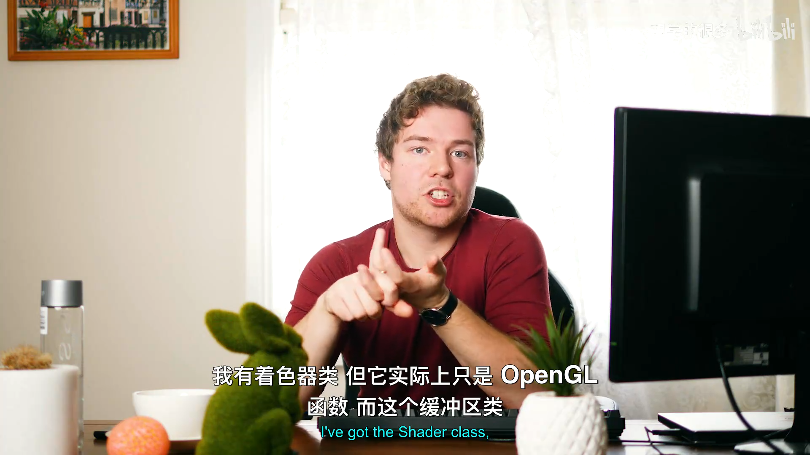
📷 Buffer 已抽象，但 Vertex Array 和 Draw Call 仍然暴露 OpenGL
回到原视频 (00:45:50)
17. 下一步
(参考时间: 00:46:40)
讲师在结尾列出两条紧接着的方向：
- 继续完善 Renderer，把清屏、绘制命令等状态集中到渲染层；
- 抽象 Vertex Array 及其配置，避免 Application 直接设置属性指针。
从本讲暴露的边界看，Buffer 只解决了数据存储，仍然需要回答：
- 多个 Vertex Buffer 如何组织到同一个 VAO；
- Buffer Layout 如何描述位置、颜色、法线等属性；
- Index Buffer 如何与 VAO 绑定；
- Draw Call 如何由 Renderer 统一发出；
- 清屏颜色和清屏命令如何从 Application 移入渲染层。
graph LR
A[本讲：Buffer abstraction] --> B[Buffer layout]
B --> C[VertexArray abstraction]
C --> D[Renderer / RenderCommand]
D --> E[Application 只提交渲染请求]
📷 下一阶段还需要继续抽象 Vertex Array 和渲染命令
回到原视频 (00:46:40)
18. 本节结论
本讲完成了 Hazel 渲染 API 抽象的第一块基础设施：
- 讨论编译期与运行期选择图形 API 的权衡；
- 选择运行期
RendererAPI状态； - 新增
Renderer与RendererAPI枚举； - 新增通用
VertexBuffer、IndexBuffer接口； - 用静态
Create()工厂选择平台实现； - 返回裸指针，由 Application 的
unique_ptr接管所有权； - 新增
OpenGLVertexBuffer、OpenGLIndexBuffer； - 把 Buffer ID、创建、上传、绑定与删除限制在 OpenGL 平台文件中；
- 用
GetCount()提供索引元素数量； - Application 不再直接创建 OpenGL Buffer；
- 保留 VAO 和 Draw Call 的 OpenGL 代码，作为下一步技术债；
- 明确图形 API 抽象是资源接口、后端选择与平台隔离共同组成的系统。
这还不是完整的 Renderer，但它建立了后续所有渲染资源都会沿用的模式：上层表达“要创建什么”，平台实现决定“底层怎样完成”。